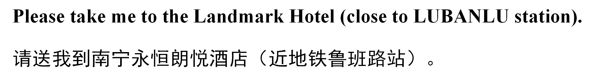
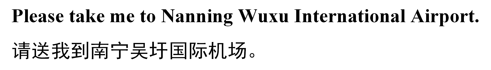

{kind=link}
Lodging Tips
Currency Exchange
Foreign currencies are usually not accepted in most cases. For your convenience, you would better bring enough CNY in cash. In Nanning, currency exchange is possible at the airport, Hotels, and banks. Hotels and big shopping malls may accept international credit cards.
Connection from and to the Nanning Airport
We have reserved some rooms of Landmark Hotel (conference venue) and another two hotels for parcitipants of the conference. The prices may be higher than usual due to the 15th China-ASEAN Exposition to be held in Nanning from September 12 to September 15, 2018. If you are willing to book a room of the recommended hotels, please remark that on the registration form. The Landmark Hotel is close to Exit D of LUBANLU station, Nanning Metro Line 1. There are also some other hotels nearby and you can book your preferred hotels by yourself. Anyway you'd better book your hotels as early as possible in case of tight hotel supplies.
The Nanning Wuxu International Airport is about 34 km away from the conference venue (Landmark Hotel). It is recommdended to take a taxi to your hotel. If you arrive on September 10 and would like to have assistance at the airport, please inform Jing Yang the time of your arrival with flight number. Someone will meet you at the airport and help ask a taxi to send you to your hotel (in this case, you should look for someone holding your name at the exit of the arrival hall).
The taxi fares in Nanning are quite affordable and you pay exactly the amount shown on the taximeter. It costs about 140 CNY from the Airport to the hotel. It is recommended to keep the receipt, which could help you find the driver when necessary. You may print the following note and show it to taxi driver.
|  |
If you take an international flight on your way back, please arrive at the airport two hours before the time of departure. You may take a taxi from your hotel to the airport which takes about one hour. You may also print the following note and show it to the taxi driver.
|  |
Restaurants
Nanning has various moderately priced Chinese restaurants, but waiters in most of these restaurants do not speak foreign languages. If you like adventure and unexpected experiences, you may just go there and have a try. Another possibility is to go to restaurants in star-ranked hotels, where the waiters can speak English. Otherwise, there are McDonald's and KFC in various places. Here you get what you know and the prices is usually lower than in other countries.
Weather
The climate of mid-September in Nanning is usually comfortable. The average temperature is about 24°C and the highest temperature may reach 32°C. Occasional winds and rains are possible.
Safety
Please be careful when crossing the streets in Nanning. Some pedestrians and bikers may ignore all kinds of traffic lights, signs, and barriers. Please do not follow them to cross the streets.